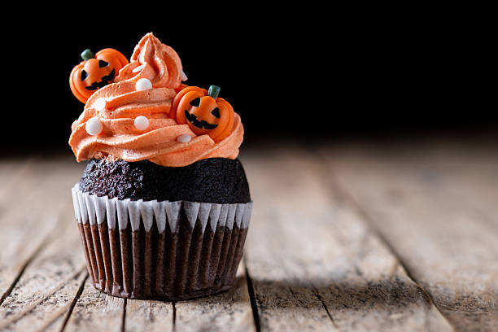

🧁 Cupcakes monstruosos

¿Te atreves a preparar unos dulces terroríficos? Descubre cómo hacer estos deliciosos cupcakes.
🧺 Ingredientes
- Magdalenas
- Chocolate
- Nata para montar
- Decoraciones de azúcar
🪄 Preparación
1. Prepara las magdalenas y deja que se enfríen.
2. Decóralas con chocolate y nata.
3. Añade los adornos para darles un aspecto monstruoso.
¡Ya tienes tus cupcakes listos para Halloween!